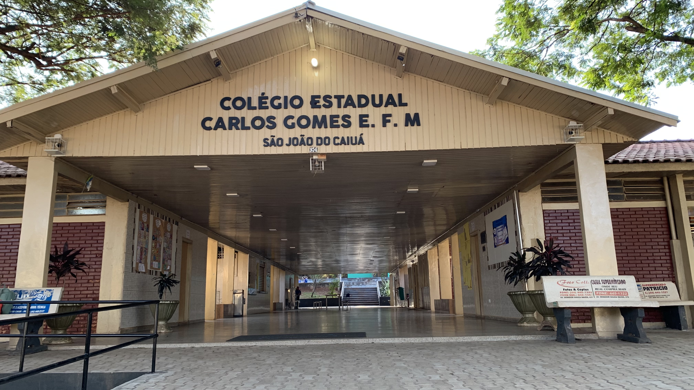

Bem-vindos!
Esta página é dedicada a explorar a rica e vital conexão entre o campo e a cidade através da merenda escolar no estado do Paraná. Acreditamos que a valorização da agricultura familiar na alimentação dos nossos estudantes não apenas promove uma dieta mais saudável e nutritiva, mas também fortalece a economia local e educa para um futuro mais sustentável.
Nesta jornada, tomaremos como exemplo inspirador o Colégio Estadual Carlos Gomes de São João do Caiuá, uma instituição que vivencia essa conexão de perto.
Vídeo em Destaque
O PNAE e a Agricultura Familiar no Paraná
O Programa Nacional de Alimentação Escolar (PNAE) desempenha um papel crucial no fornecimento de merenda escolar nas instituições públicas de ensino. Uma das diretrizes importantes do PNAE é a obrigatoriedade de que, no mínimo, 30% dos recursos financeiros repassados aos estados e municípios para a compra de gêneros alimentícios sejam utilizados na aquisição de produtos da agricultura familiar e de empreendedores familiares rurais.
Estudo de Caso: Colégio Estadual Carlos Gomes de São João do Caiuá
Localizado em São João do Caiuá, o Colégio Estadual Carlos Gomes é um exemplo de como a parceria com a agricultura familiar pode enriquecer a merenda escolar e a comunidade educativa.
Benefícios da Conexão Campo-Cidade na Merenda Escolar
- Alimentos Frescos e Nutritivos: Produtos da agricultura familiar geralmente são mais frescos, da época e cultivados de forma mais sustentável, oferecendo maior valor nutricional aos estudantes.
- Apoio à Economia Local: A compra direta da agricultura familiar fortalece os produtores locais, gera renda e desenvolvimento nas comunidades rurais.
- Educação Alimentar e Ambiental: A proximidade com os produtores pode proporcionar oportunidades de aprendizado sobre a origem dos alimentos, as práticas agrícolas e a importância da sustentabilidade.
- Valorização da Cultura Local: A merenda escolar pode incluir alimentos tradicionais da região, valorizando a cultura e a identidade local.
Desafios e Soluções
Apesar dos inúmeros benefícios, a implementação da compra de alimentos da agricultura familiar para a merenda escolar também enfrenta desafios.
- Logística e Distribuição: Garantir a entrega regular e eficiente dos alimentos frescos pode ser um desafio, especialmente em regiões mais distantes.
- Regularidade da Produção: A produção agrícola pode ser sazonal e sujeita a variações climáticas, o que pode afetar a disponibilidade de certos alimentos.
- Burocracia e Legislação: Os processos de compra e a legislação podem ser complexos e exigir adaptações por parte das escolas e dos agricultores.
- Conscientização e Engajamento: É fundamental promover a conscientização e o engajamento de todos os envolvidos (escolas, agricultores, pais, alunos) para o sucesso da iniciativa.
Para superar esses desafios, algumas soluções e boas práticas podem ser adotadas, como o planejamento antecipado das compras, a formação de redes e cooperativas de agricultores, o apoio técnico e a simplificação dos processos burocráticos.